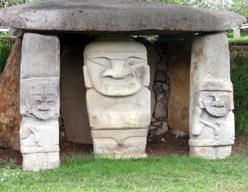
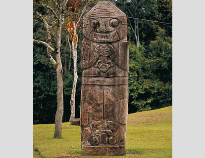
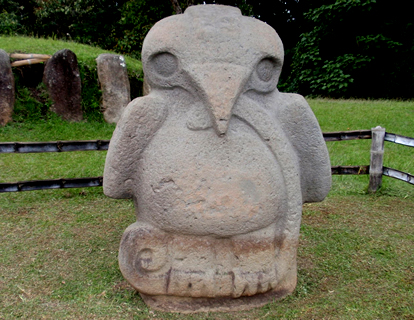
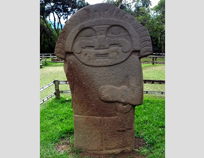

| NOMBRE | DESCRIPCIÓN | IMAGEN |
|---|
| TEMPLO DE LA LUNA | La figura principal presenta máscara felina y vientre abultado, solo viste taparrabo y está ataviada con collar y pulseras. Aparece flanqueada por dos guardianes -sin "doble yo"- con escudos y lanzas. |  |
| EL OBISPO O PARTERO | Próxima al Montículo de de la Maternidad hay una estatua de 4,20 m de altura en la que se representan dos figuras verticalmente contrapuestas, la superior sostiene un niño, la inferior representa una mujer en posición de parto. Una interpretación es la de un alumbramiento, otra la práctica de canibalismo ritual. |  |
| ÁGUILA | O tal vez un búho. Sostiene una serpiente con sus garras y pico. Existe una estatua muy similar en La Pelota. Posiblemente se trata de la representación del origen de la luz y del fuego, o de un símbolo de poder. |  |
| SACERDOTE | Presenta máscara con boca felina, corona de plumas, nariguera de amplias alas que llegan casi a los extremos de la cara y túnica. En su brazo izquierdo porta un instrumento de probable uso ritual. |  |